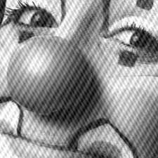
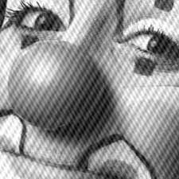
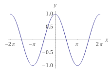
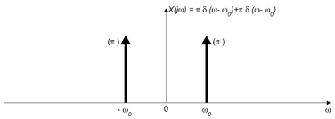

Program do usuwania szumów periodycznych poprzez manipulację widmem fourierowskim
Moim zadaniem było napisać program do usuwania szumów periodycznych z obrazów przez manipulację widmem fourierowskim.
Szumem nazwiemy obecność artefaktów w obrazie, które nie są wynikiem rejestrowanego procesu bądź sceny. Usuwanie szumów z obrazu jest szczególnym rodzajem obróbki bądź restoracji zdjęcia.
W tej pracy zajmę się usuwaniem szczególnego rodzaju szumu, szumami periodycznymi.
Szumy periodyczne to rodzaj zakłóceń powtarzającego się w regularnych odstępach. Bierze się on m. in. ze sprzężeń elektrycznych w urządzeniach rejestrujących braz, np. w skanerach.
Przykłady obrazów z szumami periodycznymi:
 

Teraz przedstawię zagadnienie widma fourierowskiego.
Transformacja Fouriera to operacja liniowa polegająca na rozłożeniu dowolnej funkcji na sumę sinusów i cosinusów o różnych częstotliwościach i różnych amplitudach. Funkcja opisująca zależność amplitudy od częstotliwości nazywana jest widmem funkcji.
Zatem szukamy odpowiedzi na pytanie:
Dla danej funkcji $f(x)$ jakie muszą być $A(\omega)$ i $B(\omega)$, aby była spełniona równość:
$$f(x) = \int_{\omega}\big[ A(\omega) \cos(\omega x) + i B(\omega) \sin(\omega x)\big]\text d\omega$$
Jeśli $f(x) = \cos(x)$, to:

natomiast transformacja Fouriera:

Jeśli $f(x)$ ma na przykład postać funkcji piły
https://ietresearch.onlinelibrary.wiley.com/doi/10.1049/iet-ipr.2018.5707